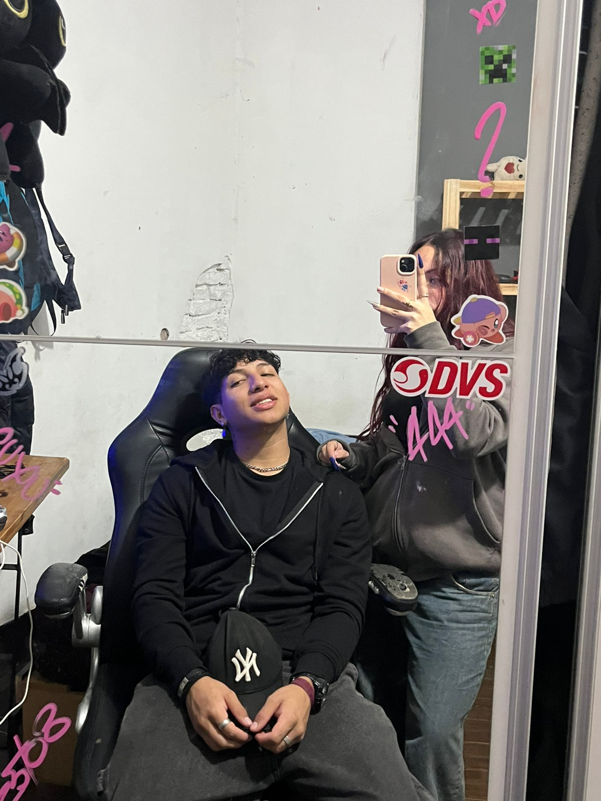
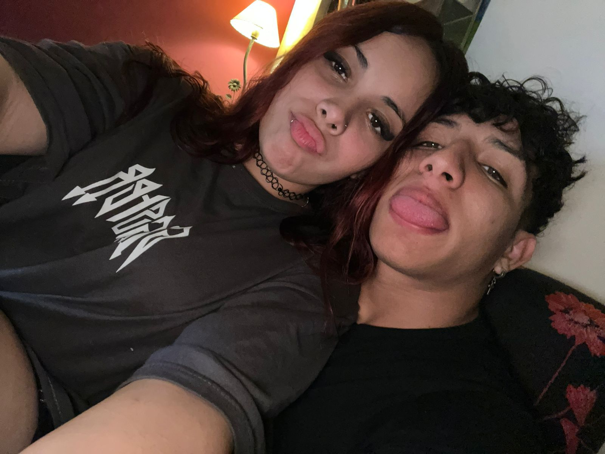
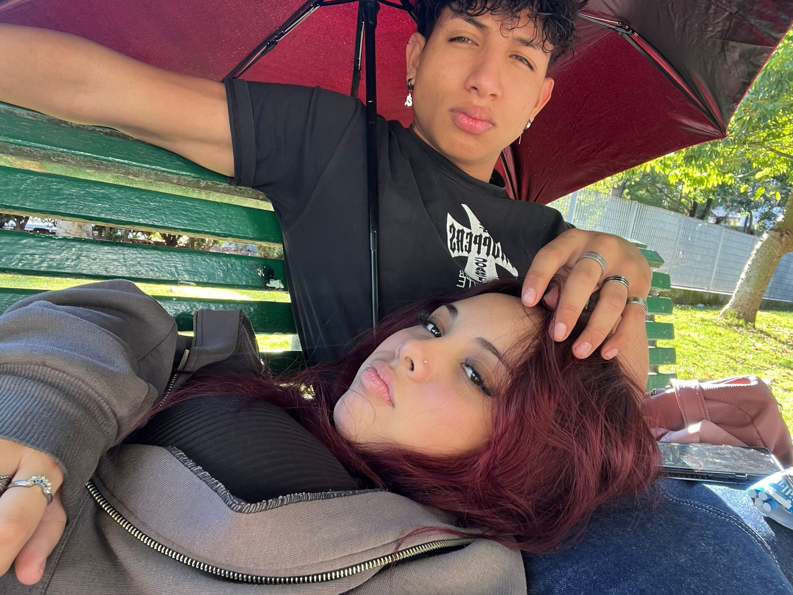
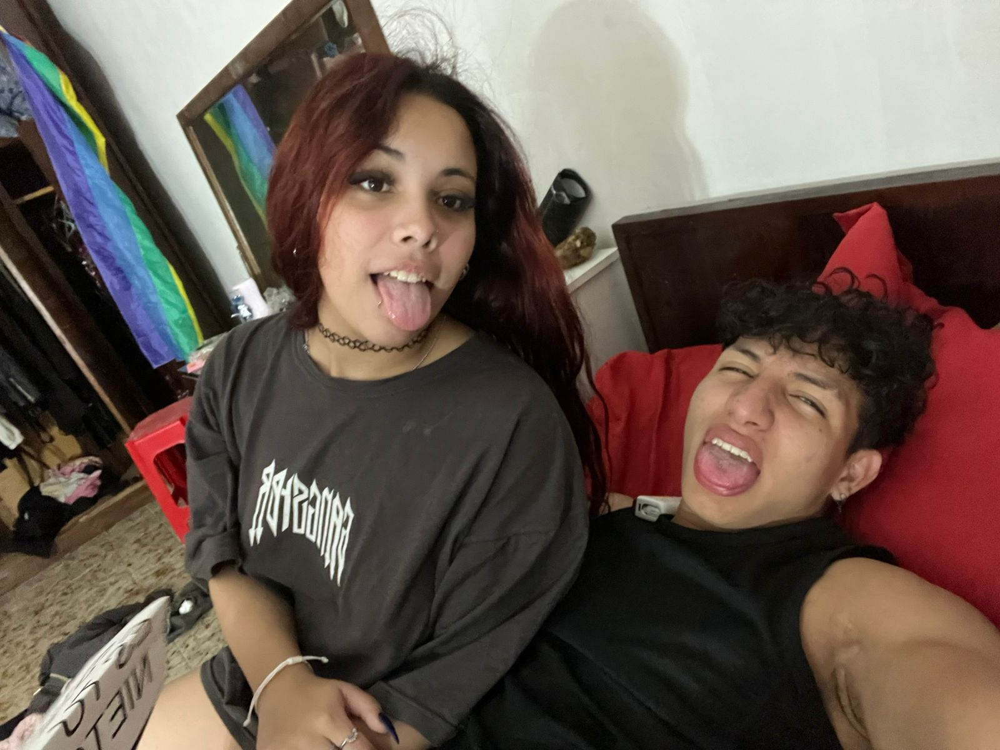

Para Kelvin 💖
Quise hacerte esto porque me salió, nunca te hice una carta y sentí que hacerlo así era más unico, más especial, algo distinto,y porque hay cosas que a veces te digo, pero también me gusta volver a decírtelas de otra forma.

Este mes que te vengo conociendo la verdad la estoy pasando muy bien con vos,
me siento cómoda, tranquila, y eso no me pasa con cualquiera, tipo puedo ser yo sin pensar tanto las cosas, sin sentirme rara, y eso vale un montón,
y posta que no me había pasado de engancharme así de una manera tan natural con alguien
La primera vez que pasó algo entre nosotros me puse muy nerviosa, pero al mismo tiempo estaba muy feliz,
porque sentí cosas, sensaciones lindas que no había sentido así antes, yo se que esto te lo digo siempre, pero siempre me gusta recordartelo,
ademas me hizo feliz poder conocer a una persona tan hermosa, tan buena, tan atento, tan detallista, gracias por cuidarme tanto, por la paciencia que me tenés, porque sé que no es fácil conmigo a veces, pero aún así estás


Hay algo de vos que me gusta mucho, y es la forma en la que sos conmigo, no solo por los detalles que tenés, sino por cómo me tratás, cómo me cuidás y la atención que me das, se nota cuando alguien hace las cosas de verdad, y con vos se siente así, a mí me hace bien estar con vos, me hace bien compartir momentos, hablar, reírnos, incluso en cosas simples, no es algo que me haya pasado muchas veces, sentirme así de tranquila con alguien, y nada, eso también lo valoro mucho, porque hoy en día no es tan fácil encontrarse con una persona así.
Y yo sé que lo que estoy viviendo con vos es algo lindo, y me gusta
Como ya te dije antes, siempre te lo digo, pero no está de más repetirlo, nunca dije un “te amo” tan de verdad como el que te dije a vos, no lo pensé, me salió así nomás, mirándote, y no me dio miedo decirlo, y eso ya dice bastante, este mes con vos fue muy lindo, entre tus detalles, las cartitas, todo lo que hacés, posta lo valoro un montón

No sé bien qué somos ni a dónde va todo esto, pero sé que me gusta, me gusta cómo se está dando, sin apurar nada, a nuestro ritmo, y me hace feliz haberte encontrado, así de simple.